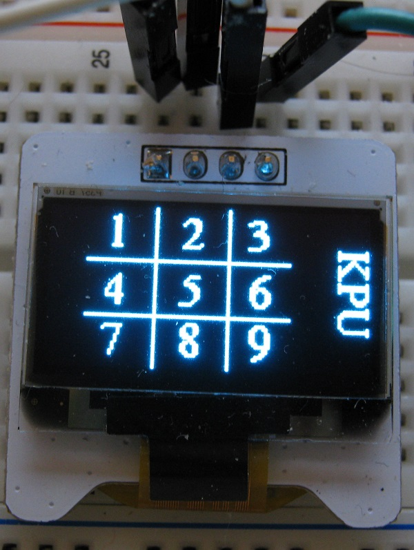
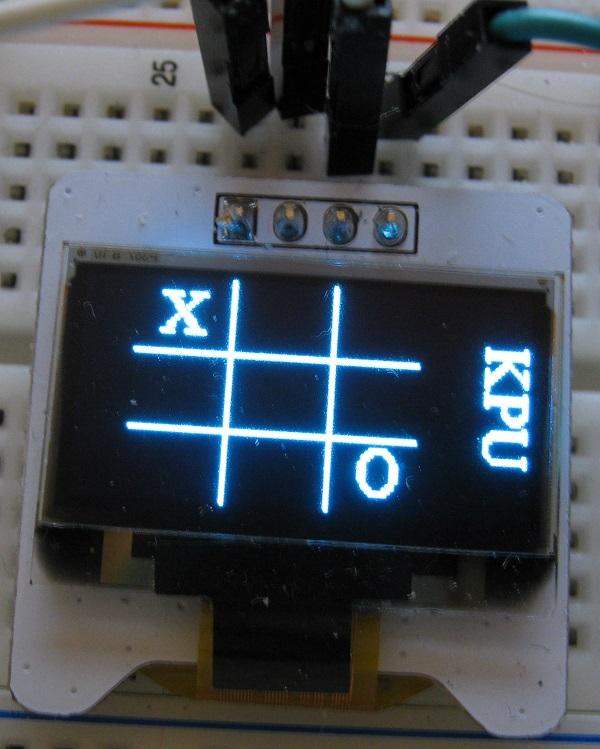
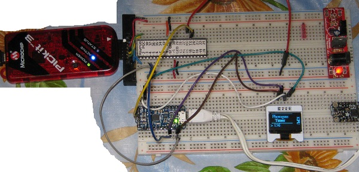
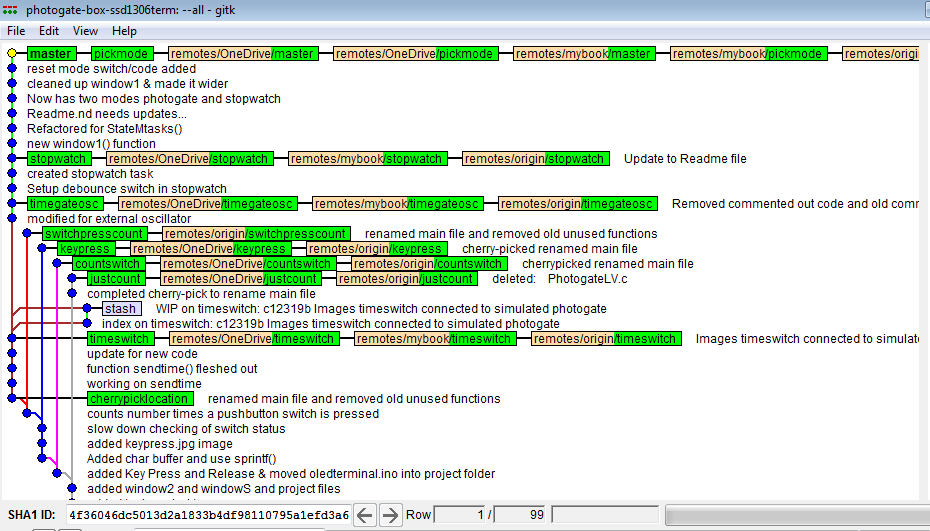

Unfortunately they don't provide up to date information for the OLED module. The datasheet is for a previous version. The Libraries supplied for the display are written by Adafruit.
Initial Testing of Display
Wiring
Initial testing was done with an Ardunino Uno as this was what was shown in the datasheet. Note the silkscreen on the v1.2 board does not match the v1.1 datasheet with regard to the pinout. I followed the silkscreen.
Pin Vcc to Arduino Uno 5+
Pin ground to Arduino Uno ground
cl to Arduino Uno A5
data to Arduiono Uno A4
No external pull ups were added!
Arduino IDE Setup
Downloaded and installed Arduino IDE for windows 7. (used installer for XP and up)
The example was copied and pasted into a new sketch.
Initially the sketch would not compile. The compiler error indicated that a variable needed to be a constant to be placed in program memory. The following line was changed (line appears just after macro definitions near beginning of file).
was -- static unsigned char PROGMEM logo16_glcd_bmp[] =
changed to -- static const unsigned char PROGMEM logo16_glcd_bmp[] =
Once the const reserved word was added the sketch compiled.
The display still remained blank. An I2C scanner Arduino sketch was used to find that the board responded to the address 0x3C. A line in the example was changed to include this address. Once this was done the display showed the example code.
display.begin(SSD1306_SWITCHCAPVCC, 0x3C);
Other modifications were made as I was interested in concentrating on the display of text rather than graphics.
Demo Video
This was recorded at the end of the day in a rush. I expect to get a better quality video soon -- it looks better in person. Also I will do some testing of different text sizes.
Code Used on First Day
Code moved to new file to avoid clutter on this page.
Switching to Current Adafruit Libraries (May 20, 2018)
It became apparent that the elecfreaks.com site provided an old version of the libraries and it seemed expedient to test the current version of the files.
It worked with a minor adjustment for the electfreak display.
Added a new branch to fork of Adafruit_SSD1306 called terminal. The intent is to be able to send serial strings to the Arduino that will act as a controller for the display. The stream of characters could come from any MCU which would not need the graphics library ported. Current testing is being done with Arduino serial monitor but will follow up with project MCU.
Runs Adafruit splash screen followed by Hello World KPU PHYS1600. It then waits for input and blanks the screen when input received, then shows text in top left of screen.
Display wraps to start of next line if it runs out of room on current line. In addition a newline character will also send the cursor to beginning of next line.
If too many rows of text are received new text is not visible.
Intercepts a number of ASCII control codes and calls a corresponding library function. The number of codes may be expanded.
To facilitate testing a Processing sketch has been written that is capable of both sending regular text and generating the control characters when select non-alphanumeric characters are used.
display.setRotation(1); // results in a portrait orientation for text on the screen
Added a new branch with SO (shift out) support. To facilitate multiple SO commands the sketch/program was converted to a state machine structure. This permits the ability to add parameters to a command. The set text position command for example requires X and Y coordinates as parameters for setting the cursor position.
The code in the setup() function was simplified by breaking out lines responsible for the start screen into a separate function. A SO command was added so that this function can be called again after the screen is cleared. This refactoring will be merged back into the timer_so branch.
tic tac toe branch Merged in
The tictactoe branch was merged into the timer branch to take advantage of new features. The essential difference now is in the default screen.
Tic Tac Toe Branch
Tic tac toe branch allows easy setup of Tic Tac Toe screens for play.
The next image shows the numbered positions corresponding to the nine positions that an X or and O can be placed. The numbers are added with the sequence: "&ts"

The next image shows an example.
An X is put in position "1" with the sequence: "&t1X" enter
The O is placed with the sequence: "&t9O" enter
The sequence shown above was typed into the Processing sketch. Note that the "&" is not sent as is to the "terminal" but is used in the sketch as it is easy to type. If one were writing a PIC program a 0x0E would be sent for the Shift Out command.

Menu items for Tic Tac Toe have been added for testing.
In the default state most ASCII characters sent will be printed if printable but do not appear on display until a newline/linefeed "" is sent (0x0A).
Default state
0x0C is an ASCII Form Feed and will be used for Clear Screen
if using Processing sketch use "~" to send 0x0C
0x11 is an ASCII Device Control 1 and will be used for Text Size 1
if using Processing sketch use "!" to send 0x11
0x12 is an ASCII Device Control 2 and will be used for Text Size 2
if using Processing sketch use "@" to send 0x12
0x13 is an ASCII Device Control 3 and will be used for Text Size 3
if using Processing sketch use "#" to send 0x13
0x14 is an ASCII Device Control 4 and will be used for Text Size 4
if using Processing sketch use "$" to send 0x14
0x09 is an ASCII Horizontal Tab and will be used for Landscape Mode
if using Processing sketch use "%" to send 0x09
0x0B is an ASCII Vertical Tab and will be used for Portrait Mode
if using Processing sketch use "^" to send 0x0B
0x0E is an ASCII Shift Out and will be used for Control Mode
if using Processing sketch use "&" to send 0x0E
do not add newline
Shift Out state Control Mode
A Back Tick "`" is used for Set Text Position Mode
expects a byte for X position and a byte for Y position for text insertion position
decimal 0x20 will be subtracted if the value is greater 0x20 or greater so that any binary value can be typed from a terminal
do not add newline
A Hyphen "-" is used for Draw Line Mode
expects four bytes for two endpoints
byte order x1,y1,x2,y2
decimal 0x20 will be subtracted if the value is greater 0x20 or greater so that any binary value can be typed from a terminal
do not add newline
A 'f' is used for Set Font
'0' internal font
'1' 9pnt Serif font
do not add newline
A 'p' is used for Show Photogate Timer start screen
A 't' is used for Tic Tac Toe
'1' to '9' is used to set area for entry
's' is used for Show Position used to show position codes/labels
'd' is used for Delete Entry
'1' to '9' is used to set area for deletion
A 'r' is used for Revert to Start Screen
New Target Pro Trinket 5v
On May 28, 2018 moved testing from Arduino Uno to Adafruit Pro Trinket 5 volts. This board is much like the Uno when combined with a USB to serial adaptor board. The Arduino IDE sees the combination as the same as a Arduino Uno. The Pro Trinket will shrink the size of the project and reduce cost. The final project will not need the USB to serial adaptor board attached which will further reduce cost when we make a class set. I will continue to use the USB to serial board for programming and testing only.
When the timer box is powered up window 1 of the display will cycle displaying possible mode selections in a repeating sequence. The mode select button allows one to select the mode.
The pickmode2620 differs from the pickmode branch in thaat it was updated for the PIC18F2620. The project was started on a breadboard using a PIC18F4525 as it happened to be available. The intent was to use the PIC18F2620 on the final project as it is physically smaller.
Stopwatch mode
When the Stopwatch mode is selected the mode select button becomes the Start/Stop button. During timing window 2 of the display shows - - -. When timing is stopped the time will be displayed in window 2. Time is reset automatically if/when the Start/Stop button is pressed again. The Mode Reset button will restart the timer with window 1 cycling the available modes.
Photogate
The Photogate mode will time the duration between negative going edges on the photogate1 input.
Pendulum
The Pendulum mode is similar to Photogate mode but is displays the total period of a swinging pendulum.
Pulse
The Pulse mode times the duration from falling edge to rising edge. Currently this mode runs once and returns to the mode selection state with the time displayed in window 2.
Picket Fence 1
This mode measures the duration between the first falling edge (the trigger point) and each of eight subsequent falling edges. None of the times are displayed until they have all been recorded. The display will then continuously cycle through and display each time.
Historical Notes (before pickmode2620 was created)
The old Git PIC MCU photogate box repository was imported into a new repository and will be modified to make use of the graphics display terminal.
A simple exploratory project that combines a PIC MCU with the OLED terminal. This is essentially my first experiment in using the Pro 5+ Volt Trinket -- OLED graphics display combo as a display terminal for a PIC project.
The Circuit with the PIC18F4525 and Display Terminal 
Power Source
There are several possible methods of powering the Pro Trinket board which distributes power to the rest of the project.
When Programming the Trinket
The Pro 5+Volt Trinket board was powered from a USB to serial adapter board that was also used to program the Trinket.
When Receiving Serial Data from a PIC MCU
The adapter is removed and power comes through a Micro B USB connector in the Trinket. VDD and ground is being distributed to the PIC MCU and the OLED display from the Trinket.
There is a jumper from the PIC Tx pin to the Trinket board Rx.
Added a Window State to Terminal
In an effort to eliminate flicker that was evident in the count line on the display a window state was created. There is no call to display.display() until a newline is received.
The window state looks for a numeral input indicating which window to clear and print into. So far only one window has been defined and named '2'.
window2 is the area below the lower line of the Photogate Timer heading.
There is an intent to define window1 as the area of the heading.
There is an intent to define window3 as the space to the right that includes KPU.
The main while loop running in the PIC for justcount is very simple. The count is free running and the time per cycle is not a prime consideration.
This branch explores posting a message to the display that indicates if a pushbutton switch has been pressed or released.
Use of sprintf and a char buffer
Since printf() does not return until all but the last two characters are sent it generally causes delays. Those delays could result in missed key presses. To avoid that issue sprintf() is being used rather than printf().
oledterminal.ino has been moved to PhotogateLV.c Repository
It seemed more practical to have a copy of the terminal sketch in the PhotogateLC.c repository.
switchpresscount
This branch counts the number of times a button switch has been pressed. This could be useful to ensure switch bounce has been deal with adequately.
place image
timeswitch
This branch was initially intended to time the interval between key presses. It became apparent testing would be more consistent if a photogate were simulated with a digital signal from another MCU. A Trinket M0 was available and used for this purpose.
The Trinket M0 code used to generate a period of about 20 seconds.
// the setup function runs once when you press reset or power the boardvoid setup() {
// initialize digital pin 13 as an output.
pinMode(13, OUTPUT);
pinMode(0, OUTPUT);
}
// the loop function runs over and over again forevervoid loop() {
digitalWrite(13, HIGH); // turn the LED on (HIGH is the voltage level)
digitalWrite(0, HIGH);
delay(10000); // wait for 10 seconds
digitalWrite(13, LOW); // turn the LED off by making the voltage LOW
digitalWrite(0, LOW);
delay(10000); // wait for 10 seconds
}
It was decided to rename the main file of the project and move unused functions to a different file. This change has now been cherry picked and merged into older branches.
Branches Graphic

The hash that was cherry picked from is given below:
<3962c9e44e09b1ef240829ac2531e926d5549208>
timegateosc
This branch was derived from timeswitch. The code was altered to work with an external 32 MHz rather than the internal oscillator used initially.
Watch for updates to this page.
stopwatch
This branch was derived from timegateosc. The code was altered to time between start and stop button presses. This branch ignores the simulated photogate on the CCP1 input. The follow up branch will create a mode select to allow one to choose either mode of operation.